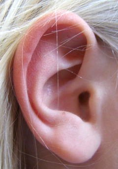

Chiar şi când nu le dai importanţă, ajung la tine încontinuu sunete de o uluitoare diversitate (figura 1D−1).
|  | Fig. 1D−1. Pavilionul urechii, "poarta" prin care ajung la tine sunetele. |
Cum sunt oare generate sunetele, cum ajung la tine şi cum îţi creează bună dispoziţie sau disconfort? Există oare şi sunete pe care nu le putem auzi?
Iată câteva întrebări la care vei afla răspuns în acestă secţinue, dedicată acusticii − ştiinţa sunetelor.